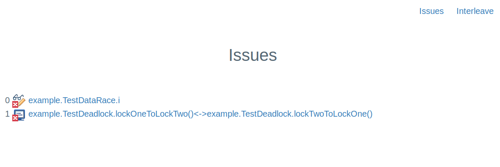
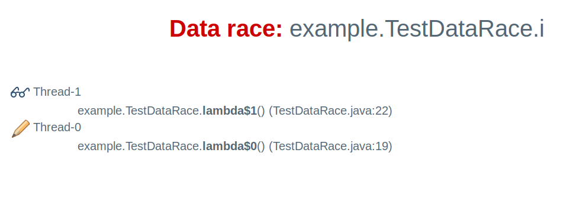
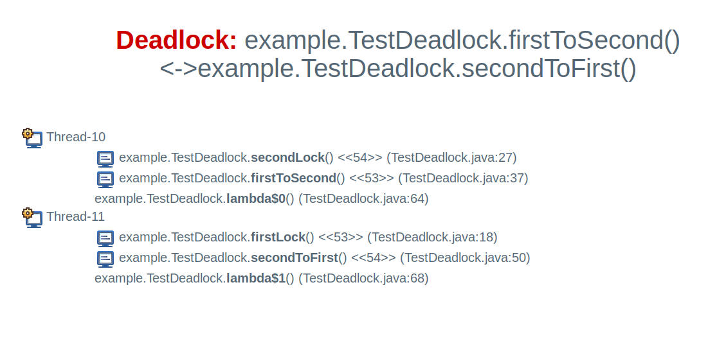
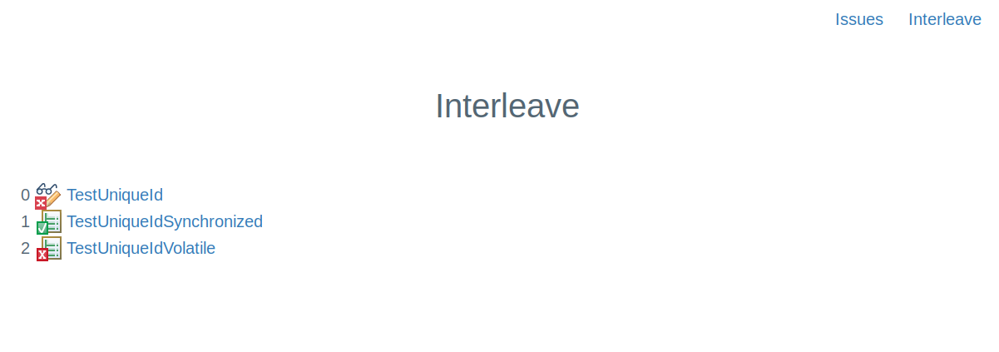

The maven plugin
Installation and running tests
To use vmlens with maven, configure a plugin tag to tell maven that the vmlens plugin should be executed at the test phase. And include the jar com.vmlens.api as test dependency.
<project>
<!-- to include the class AllInterleavings into the test class path. -->
<dependency>
<groupId>com.vmlens</groupId>
<artifactId>api</artifactId>
<version>1.1.5</version>
<scope>test</scope>
</dependency>
<build>
<plugins>
<!-- to run the vmlens maven plugin during the maven test phase -->
<plugin>
<groupId>com.vmlens</groupId>
<artifactId>interleave</artifactId>
<version>1.1.5</version>
<executions>
<execution>
<goals>
<goal>test</goal>
</goals>
</execution>
</executions>
</plugin>
...
</plugins>
</build>
...
</project>
plugin configuration
The vmlens interleave plugin is based on the maven surefire plugin. All configs which apply to the maven surefire plugin apply also to the interleave plugin, except the test fork configs.
The following parameters are additions from the vmlens interleave plugin:
doNotTrace
The doNotTrace let you exclude methods from tracing through vmlens. A method matching the doNotTrace tag and all methods called by this method will not be traced by vmlens. In the following example the method om. and all methods of the class com. will not be traced:
<doNotTrace> <method>com.vmlens.test.TestMethod.signal</method> <method>com.vmlens.test.TestMavenDoNotTrace.*</method> </doNotTrace>
vmlens supports the ant directory pattern for method names. So you can use the following wild cards:
- * Matches zero or more characters (not including the path separator .)
- ** Matches zero or more path segments.
- ? Matches one character (any character except the path separator .)
Examples:
- com.vmlens.** Matches all methods from classes in the package and sub-packages from com.vmlens
- com.vmlens.test.TestAllRaces.* Matches all methods in the class com.vmlens.test.TestAllRaces
suppress
The suppress tag let you suppress data races. If a data race is suppressed it will no longer show in the issue report and the build will no longer fail because of this data race. The following example shows how to suppress a data race at the field com., at the primitive array int[] in the method com. and at the array java.lang.String[] in the class com. using the pattern *.
<suppress> <race>com.vmlens.examples.config.TestSuppressDataRaceAtField.i</race> <race>int[]@com.vmlens.examples.config.TestSuppressPrimitiveArrayWithAt.updateArray</race> <race>java.lang.String[]@com.vmlens.examples.config.TestSuppressArrayWithAtAndPattern.*</race> </suppress>
trace
Trace let you narrow the methods which get traced. If trace is configured vmlens will only search for data races inside methods matching the trace elements. Also when showing the stack trace where the data race was found vmlens will start at the first method matching a trace element.
The following example shows how to narrow the search and stack trace to methods from classes to the package com.vmlens.test.
<trace> <method>com.vmlens.test.state.report.**</method> </trace>
vmlens supports the ant directory pattern for method names. So you can use the following wild cards:
- * Matches zero or more characters (not including the path separator .)
- ** Matches zero or more path segments.
- ? Matches one character (any character except the path separator .)
Examples:
- com.vmlens.** Matches all methods from classes in the package and sub-packages from com.vmlens
- com.vmlens.test.TestAllRaces.* Matches all methods in the class com.vmlens.test.TestAllRaces
deadlockAndDataRaceDetection
The maven tag deadlockAndDataRaceDetection let you disable the offline detection of deadlocks and data races. To disable deadlock and data raqces set deadlockAndDataRaceDetection to false:
<deadlockAndDataRaceDetection>false</deadlockAndDataRaceDetection>
The reports
The issues report
The issues report shows you all the issues found by vmlens. vmlens detects data races and deadlock by analyzing the execution trace of your test. The report is located in the file maven output folder target/interleave/issues.html.

The example report shows one data race, the symbol  and one deadlock, the symbol
and one deadlock, the symbol  . The data races happened at accessing the field example.TestDataRace.i .The deadlock happened between the method lockOneToLockTwo and lockTwoToLockOne. Click one of the links to see the stack traces of the data race or deadlock.
. The data races happened at accessing the field example.TestDataRace.i .The deadlock happened between the method lockOneToLockTwo and lockTwoToLockOne. Click one of the links to see the stack traces of the data race or deadlock.
The data race report
After clicking on the data race you see the following report:

This Html site shows you the stack trace and thread name of the reading thread, the symbol  and for the writing thread, the symbol
and for the writing thread, the symbol  .
.
The deadlock report
After clicking on the deadlock you see the following report:

This report shows you the thread names of the two threads in the deadlock, the symbol  ,and the stack trace. The position in the stack trace in which a monitor was acquired is marked with the symbol
,and the stack trace. The position in the stack trace in which a monitor was acquired is marked with the symbol  .
.
The interleave report
The interleave report shows you the thread interleavings which led to an assertion error or to a data race. The report is located in the file maven output folder target/interleave/elements.html.

The interleave detail report

The interleave detail report shows you one thread interleaving of an interleave loop. The report shows you all synchronization actions and data races in the order of occurrence. In the above example, first, a thread with thread id 13 wrote to the variable i which led to data race. After that, the same thread entered a synchronized block, and so on. The following symbols are used in this report:
The following symbols are used in this report:
-
 A write which led to a data race
A write which led to a data race
-
 A read which led to a data race
A read which led to a data race
-
A write to a volatile field
-
A read to a volatile field
-
 A monitor or lock enter
A monitor or lock enter
-
 A monitor or lock exit
A monitor or lock exit
The stack trace report
The stack trace report shows the stack trace of a method call: